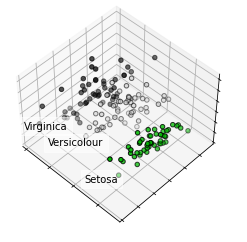

Project Sains Data#
[Tugas 1] Crawling Data Twitter#
pip install snscrape
Looking in indexes: https://pypi.org/simple, https://us-python.pkg.dev/colab-wheels/public/simple/
Collecting snscrape
Downloading snscrape-0.6.2.20230320-py3-none-any.whl (71 kB)
?25l ━━━━━━━━━━━━━━━━━━━━━━━━━━━━━━━━━━━━━━━━ 0.0/71.8 KB ? eta -:--:--
━━━━━━━━━━━━━━━━━━━━━━━━━━━━━━━━━━━━━━━━ 71.8/71.8 KB 3.1 MB/s eta 0:00:00
?25hRequirement already satisfied: filelock in /usr/local/lib/python3.9/dist-packages (from snscrape) (3.10.7)
Requirement already satisfied: lxml in /usr/local/lib/python3.9/dist-packages (from snscrape) (4.9.2)
Requirement already satisfied: requests[socks] in /usr/local/lib/python3.9/dist-packages (from snscrape) (2.27.1)
Requirement already satisfied: beautifulsoup4 in /usr/local/lib/python3.9/dist-packages (from snscrape) (4.11.2)
Requirement already satisfied: soupsieve>1.2 in /usr/local/lib/python3.9/dist-packages (from beautifulsoup4->snscrape) (2.4)
Requirement already satisfied: urllib3<1.27,>=1.21.1 in /usr/local/lib/python3.9/dist-packages (from requests[socks]->snscrape) (1.26.15)
Requirement already satisfied: idna<4,>=2.5 in /usr/local/lib/python3.9/dist-packages (from requests[socks]->snscrape) (3.4)
Requirement already satisfied: charset-normalizer~=2.0.0 in /usr/local/lib/python3.9/dist-packages (from requests[socks]->snscrape) (2.0.12)
Requirement already satisfied: certifi>=2017.4.17 in /usr/local/lib/python3.9/dist-packages (from requests[socks]->snscrape) (2022.12.7)
Requirement already satisfied: PySocks!=1.5.7,>=1.5.6 in /usr/local/lib/python3.9/dist-packages (from requests[socks]->snscrape) (1.7.1)
Installing collected packages: snscrape
Successfully installed snscrape-0.6.2.20230320
import requests as req
from bs4 import BeautifulSoup as bs
import csv
from csv import writer # untuk file csv
import pandas as pd
from tqdm.notebook import tqdm
from ipywidgets import FloatProgress
import snscrape.modules.twitter as sntwitter
#agent user : supaya web server menampilkan konten yang dimiliki sesuai dengan OS yang kita gunakan, jadi web server tau browser dan OS yang kita gunakan
hades = {'user-agent': 'Mozilla/5.0 (Windows NT 10.0; Win64; x64) AppleWebKit/537.36 (KHTML, like Gecko) Chrome/110.0.0.0 Safari/537.36'}
scraper=sntwitter.TwitterSearchScraper("#prabowo")
tweets=[]
n_tweets=10
for i, tweet in tqdm(enumerate(scraper.get_items()), total=n_tweets):
data=[
tweet.user.username,
tweet.rawContent,
tweet.user.location,
]
tweets.append(data)
if i > n_tweets:
break
tweet_df=pd.DataFrame(tweets, columns=['@Username','Tweet', 'Lokasi'])
tweet_df
| @Username | Tweet | Lokasi | |
|---|---|---|---|
| 0 | mypresidentid | Ingat pesan Pak Bowo, tidak ada jalan yang rin... | Indonesia Raya |
| 1 | AdrianaDaneen | Membaca Peta Kekuatan Anies, Ganjar, dan Prabo... | Jakarta Capital Region |
| 2 | adiojanoski | Breaking News : Membaca Peta Kekuatan Anies, G... | ÜT: -6.3480548,106.8316685 |
| 3 | AdrianaDaneen | Simulasi Duet Prabowo Subianto-Erick Thohir Te... | Jakarta Capital Region |
| 4 | yosephrosario_ | Pelajaran Hidup Prabowo Dari Para Seniornya ... | |
| 5 | yosephrosario_ | Cerita Prabowo Kapten TNI (Purn.) Abdullah Har... | |
| 6 | florieliciouss | @Yopiluthfi2 @Ndons_Back Dr 2014 ada gw juga y... | |
| 7 | AdrianaDaneen | Elektabilitas Gerindra Serta Prabowo Subianto ... | Jakarta Capital Region |
| 8 | wartaHterkini | #airlanggahartarto #golkarindonesia #koalisibe... | |
| 9 | AdrianaDaneen | Elektabilitas Gerindra Serta Prabowo Subianto ... | Jakarta Capital Region |
| 10 | AdrianaDaneen | 52 Relawan Bersatu Menjadi BRP, Siap Menangkan... | Jakarta Capital Region |
| 11 | cikilokidog | 52 Relawan Bersatu Menjadi BRP, Siap Menangkan... | Kota Bandung, Jawa Barat |
tweet_df.to_csv('Twitter-prabowo.csv', index=False)
[Tugas 2] Crawling Data Berita#
url = "https://nasional.tempo.co/" # instalisasi alamat url
berita =[]
res = req.get(url) # menggunakan url untuk mengirim header
html = bs(res.content, "html.parser") # parsing html menggunakan Beautifulsoup
rows = html.find("div", class_ = "overflow margin-bottom-xs") # menggunakan fungsi find untuk mencari class dengan nama "_1E0nAqju"
divs = rows.findAll("div", {"class" :"card-box ft240 margin-bottom-sm"}) # mencari semua class dengan nama "I8luE9wS" yang ada pada variabel rows
for div in divs:
title = div.find("article", class_ = "text-card").h2.get_text().replace('\n', '') # mencari tag dan mereplace baris kosong atau enter
isi = div.find("article", class_ = "text-card").p.get_text().replace('\t', '') # mencari dan mereplace spaci
berita.append([title,isi]) # membuat kolom baris data pada csv dengan variabel (kategori, title)
news = pd.DataFrame(berita,columns=['Judul','Isi'])
news
| Judul | Isi | |
|---|---|---|
| 0 | Aliansi Masyarakat Adat Nusantara Raih Skoll A... | Aliansi Masyarakat Adat Nusantara (AMAN) berh... |
| 1 | Pakar Nilai Koalisi Besar Sulit Terwujud karen... | Partai-partai yang ingin membentuk koalisi bes... |
| 2 | Kepesertaan Program JKN Capai 90 Persen | Kehadiran program Jaminan Kesehatan Nasional (... |
| 3 | Bareskrim Sebut 15 Pucuk Senjata Dito Mahendra... | Bareskrim menyatakan 15 pucuk senjata Dito Mah... |
| 4 | PIT Kebijakan Strategis, Jamin Keberlajutan Us... | Kebijakan PIT untuk memberikan titik optimum b... |
| 5 | Dito Mahendra Simpan 15 Pucuk Senjata Api, Pol... | Dittipidter Bareskrim Brigjen Djuhandhani meng... |
| 6 | Endar Priantoro Laporkan Firli Bahuri ke Dewas... | Mantan Ketua Wadah Pegawai KPK Yudi Purnomo Ha... |
| 7 | Lestari Moerdijat Minta Gerakan Pemeriksaan Ke... | Banyak masalah yang bisa diatasi dari upaya pe... |
| 8 | Bamsot Dukung Langkah PFN Buat Film tentang In... | Selain dibuat dalam bentuk film, "Indonesia No... |
| 9 | Ini Alasan AHY Duga Moeldoko Ingin Jegal Penca... | AHY mengungkapkan alasan dugaan Moeldoko ingin... |
news.to_csv('berita_tempo.csv', index=False)
[ Tugas 3] Crawling Data PTA Trunojoyo#
#create an object HTTPresponse
def DataPTA(page):
global hades
data=[]
for p in range(1,page+1):
if p==1 :
URL = "https://pta.trunojoyo.ac.id/c_search/byprod/10/"
else :
URL = f"https://pta.trunojoyo.ac.id/c_search/byprod/10/{p}"
request = req.get(URL,hades).text
#var bs yang menyimpan data request berupa html
soup = bs(request, 'lxml')
prodi = soup.find_all('div',{'id':'begin'})
for pro in prodi:
prod = pro.find('h2').text
jur = prod[-18:]
ul = soup.find('ul', 'items list_style')
li = ul.find_all('li', {'data-id':'id-1'})
for x in li:
link = x.find('a','gray button')['href']
request2 = req.get(link, hades).text
soup2 = bs(request2, 'lxml')
abst= soup2.find('p',{'align':'justify'}).text.replace('\r','').replace('\n','')
NPM = x.find('a','gray button')['href'][-12:]
headline = x.find('a', 'title').text.replace('\r','').replace('\n','')
data.append([NPM,headline,abst,jur])
return data
data=DataPTA(172)
result = pd.DataFrame(data)
result.columns = ["NPM", "Judul","Abstrak","Prodi"]
result
KeyboardInterruptTraceback (most recent call last)
<ipython-input-8-458bb241435f> in <cell line: 1>()
----> 1 data=DataPTA(172)
2 result = pd.DataFrame(data)
3 result.columns = ["NPM", "Judul","Abstrak","Prodi"]
4 result
<ipython-input-7-df3b01fb2fc3> in DataPTA(page)
19 for x in li:
20 link = x.find('a','gray button')['href']
---> 21 request2 = req.get(link, hades).text
22 soup2 = bs(request2, 'lxml')
23 abst= soup2.find('p',{'align':'justify'}).text.replace('\r','').replace('\n','')
/usr/local/lib/python3.9/dist-packages/requests/api.py in get(url, params, **kwargs)
73 """
74
---> 75 return request('get', url, params=params, **kwargs)
76
77
/usr/local/lib/python3.9/dist-packages/requests/api.py in request(method, url, **kwargs)
59 # cases, and look like a memory leak in others.
60 with sessions.Session() as session:
---> 61 return session.request(method=method, url=url, **kwargs)
62
63
/usr/local/lib/python3.9/dist-packages/requests/sessions.py in request(self, method, url, params, data, headers, cookies, files, auth, timeout, allow_redirects, proxies, hooks, stream, verify, cert, json)
527 }
528 send_kwargs.update(settings)
--> 529 resp = self.send(prep, **send_kwargs)
530
531 return resp
/usr/local/lib/python3.9/dist-packages/requests/sessions.py in send(self, request, **kwargs)
643
644 # Send the request
--> 645 r = adapter.send(request, **kwargs)
646
647 # Total elapsed time of the request (approximately)
/usr/local/lib/python3.9/dist-packages/requests/adapters.py in send(self, request, stream, timeout, verify, cert, proxies)
438 try:
439 if not chunked:
--> 440 resp = conn.urlopen(
441 method=request.method,
442 url=url,
/usr/local/lib/python3.9/dist-packages/urllib3/connectionpool.py in urlopen(self, method, url, body, headers, retries, redirect, assert_same_host, timeout, pool_timeout, release_conn, chunked, body_pos, **response_kw)
701
702 # Make the request on the httplib connection object.
--> 703 httplib_response = self._make_request(
704 conn,
705 method,
/usr/local/lib/python3.9/dist-packages/urllib3/connectionpool.py in _make_request(self, conn, method, url, timeout, chunked, **httplib_request_kw)
384 # Trigger any extra validation we need to do.
385 try:
--> 386 self._validate_conn(conn)
387 except (SocketTimeout, BaseSSLError) as e:
388 # Py2 raises this as a BaseSSLError, Py3 raises it as socket timeout.
/usr/local/lib/python3.9/dist-packages/urllib3/connectionpool.py in _validate_conn(self, conn)
1040 # Force connect early to allow us to validate the connection.
1041 if not getattr(conn, "sock", None): # AppEngine might not have `.sock`
-> 1042 conn.connect()
1043
1044 if not conn.is_verified:
/usr/local/lib/python3.9/dist-packages/snscrape/base.py in connect(self, *args, **kwargs)
139 class _HTTPSConnection(urllib3.connection.HTTPSConnection):
140 def connect(self, *args, **kwargs):
--> 141 conn = super().connect(*args, **kwargs)
142 #FIXME: Uses undocumented attribute self.sock and beyond.
143 try:
/usr/local/lib/python3.9/dist-packages/urllib3/connection.py in connect(self)
417 context.load_default_certs()
418
--> 419 self.sock = ssl_wrap_socket(
420 sock=conn,
421 keyfile=self.key_file,
/usr/local/lib/python3.9/dist-packages/urllib3/util/ssl_.py in ssl_wrap_socket(sock, keyfile, certfile, cert_reqs, ca_certs, server_hostname, ssl_version, ciphers, ssl_context, ca_cert_dir, key_password, ca_cert_data, tls_in_tls)
447
448 if send_sni:
--> 449 ssl_sock = _ssl_wrap_socket_impl(
450 sock, context, tls_in_tls, server_hostname=server_hostname
451 )
/usr/local/lib/python3.9/dist-packages/urllib3/util/ssl_.py in _ssl_wrap_socket_impl(sock, ssl_context, tls_in_tls, server_hostname)
491
492 if server_hostname:
--> 493 return ssl_context.wrap_socket(sock, server_hostname=server_hostname)
494 else:
495 return ssl_context.wrap_socket(sock)
/usr/lib/python3.9/ssl.py in wrap_socket(self, sock, server_side, do_handshake_on_connect, suppress_ragged_eofs, server_hostname, session)
499 # SSLSocket class handles server_hostname encoding before it calls
500 # ctx._wrap_socket()
--> 501 return self.sslsocket_class._create(
502 sock=sock,
503 server_side=server_side,
/usr/lib/python3.9/ssl.py in _create(cls, sock, server_side, do_handshake_on_connect, suppress_ragged_eofs, server_hostname, context, session)
1039 # non-blocking
1040 raise ValueError("do_handshake_on_connect should not be specified for non-blocking sockets")
-> 1041 self.do_handshake()
1042 except (OSError, ValueError):
1043 self.close()
/usr/lib/python3.9/ssl.py in do_handshake(self, block)
1308 if timeout == 0.0 and block:
1309 self.settimeout(None)
-> 1310 self._sslobj.do_handshake()
1311 finally:
1312 self.settimeout(timeout)
KeyboardInterrupt:
# result.to_csv('pta_infor.csv', index=False)
result.to_excel('pta_infor.xlsx', index=False)
[Tugas 4]#
http://localhost:8888/?token=456ad165f4ea36ec8cba4ebfcb67914e74cb23f142b572a4
!pip install mysqlclient
!pip install mysql-connector-python
!pip install pymysql
!pip install pyodbc
!pip install psycopg2
!pip install pandas
Requirement already satisfied: mysqlclient in c:\users\iis\miniconda3\lib\site-packages (2.1.1)
Requirement already satisfied: mysql-connector-python in c:\users\iis\miniconda3\lib\site-packages (8.0.32)
Requirement already satisfied: protobuf<=3.20.3,>=3.11.0 in c:\users\iis\miniconda3\lib\site-packages (from mysql-connector-python) (3.20.3)
Requirement already satisfied: pymysql in c:\users\iis\miniconda3\lib\site-packages (1.0.2)
Requirement already satisfied: pyodbc in c:\users\iis\miniconda3\lib\site-packages (4.0.35)
Requirement already satisfied: psycopg2 in c:\users\iis\miniconda3\lib\site-packages (2.9.5)
Collecting pandas
Downloading pandas-1.5.3-cp38-cp38-win_amd64.whl (11.0 MB)
Collecting pytz>=2020.1
Downloading pytz-2022.7.1-py2.py3-none-any.whl (499 kB)
Collecting numpy>=1.20.3; python_version < "3.10"
Downloading numpy-1.24.2-cp38-cp38-win_amd64.whl (14.9 MB)
Requirement already satisfied: python-dateutil>=2.8.1 in c:\users\iis\miniconda3\lib\site-packages (from pandas) (2.8.2)
Requirement already satisfied: six>=1.5 in c:\users\iis\miniconda3\lib\site-packages (from python-dateutil>=2.8.1->pandas) (1.15.0)
Installing collected packages: pytz, numpy, pandas
Successfully installed numpy-1.24.2 pandas-1.5.3 pytz-2022.7.1
import pyodbc
import pandas as pd
cnxn_str = ("Driver={odbc driver 17 for sql server};"
"Server=DESKTOP-82B6F9B\SQLEXPRESS;"
"Database=prosain200411100174;"
"Trusted_Connection=yes;")
cnxn = pyodbc.connect(cnxn_str)
cursor = cnxn.cursor()
cursor.execute("SELECT * FROM dbo.petalwidthh")
row = cursor.fetchall()
cursor.close()
data=[]
for i in row:
data.append([i[0],i[1],i[2]])
df_sqlServer = pd.DataFrame(data, columns=['id','petalwidth','class'])
df_sqlServer
| id | petalwidth | class | |
|---|---|---|---|
| 0 | 1 | 0.2 | Iris-setosa |
| 1 | 2 | 0.2 | Iris-setosa |
| 2 | 3 | 0.2 | Iris-setosa |
| 3 | 4 | 0.2 | Iris-setosa |
| 4 | 5 | 0.2 | Iris-setosa |
| ... | ... | ... | ... |
| 145 | 146 | 2.3 | Iris-virginica |
| 146 | 147 | 1.9 | Iris-virginica |
| 147 | 148 | 2 | Iris-virginica |
| 148 | 149 | 2.3 | Iris-virginica |
| 149 | 150 | 1.8 | Iris-virginica |
150 rows × 3 columns
import psycopg2
import pandas as pd
# Connection parameters, yours will be different
param_dic = {
"host" : "tiny.db.elephantsql.com",
"database" : "xhnmpbtl",
"user" : "xhnmpbtl",
"password" : "oWmT-kw1-VNpopQTdwgceQglfn0Nln6n"
}
def connect(params_dic):
""" Connect to the PostgreSQL database server """
conn = None
try:
# connect to the PostgreSQL server
print('Connecting to the PostgreSQL database...')
conn = psycopg2.connect(**params_dic)
except (Exception, psycopg2.DatabaseError) as error:
print(error)
sys.exit(1)
print("Connection successful")
return conn
def postgresql_to_dataframe(conn, select_query, column_names):
"""
Tranform a SELECT query into a pandas dataframe
"""
cursor = conn.cursor()
try:
cursor.execute(select_query)
except (Exception, psycopg2.DatabaseError) as error:
print("Error: %s" % error)
cursor.close()
return 1
# Naturally we get a list of tupples
tupples = cursor.fetchall()
cursor.close()
# We just need to turn it into a pandas dataframe
df = pd.DataFrame(tupples, columns=column_names)
return df
# Connect to the database
conn = connect(param_dic)
column_names = ['id','sepalwidth']
df_postEle = postgresql_to_dataframe(conn, "select * from sepalwidthh", column_names)
df_postEle
Connecting to the PostgreSQL database...
Connection successful
| id | sepalwidth | |
|---|---|---|
| 0 | 1 | 3.5 |
| 1 | 2 | 3 |
| 2 | 3 | 3.2 |
| 3 | 4 | 3.1 |
| 4 | 5 | 3.6 |
| ... | ... | ... |
| 145 | 146 | 3 |
| 146 | 147 | 2.5 |
| 147 | 148 | 3 |
| 148 | 149 | 3.4 |
| 149 | 150 | 3 |
150 rows × 2 columns
import psycopg2
import pandas as pd
# Connection parameters, yours will be different
param_dic = {
"host" : "localhost",
"database" : "prosain200411100174",
"user" : "postgres",
"password" : "nurulfaizah23"
}
def connect(params_dic):
""" Connect to the PostgreSQL database server """
conn = None
try:
# connect to the PostgreSQL server
print('Connecting to the PostgreSQL database...')
conn = psycopg2.connect(**params_dic)
except (Exception, psycopg2.DatabaseError) as error:
print(error)
sys.exit(1)
print("Connection successful")
return conn
def postgresql_to_dataframe(conn, select_query, column_names):
"""
Tranform a SELECT query into a pandas dataframe
"""
cursor = conn.cursor()
try:
cursor.execute(select_query)
except (Exception, psycopg2.DatabaseError) as error:
print("Error: %s" % error)
cursor.close()
return 1
# Naturally we get a list of tupples
tupples = cursor.fetchall()
cursor.close()
# We just need to turn it into a pandas dataframe
df = pd.DataFrame(tupples, columns=column_names)
return df
# Connect to the database
conn = connect(param_dic)
column_names = ['id','sepallength']
df_postLocal = postgresql_to_dataframe(conn, "select * from sepallengthh", column_names)
df_postLocal
Connecting to the PostgreSQL database...
Connection successful
| id | sepallength | |
|---|---|---|
| 0 | 1 | 5.1 |
| 1 | 2 | 4.9 |
| 2 | 3 | 4.7 |
| 3 | 4 | 4.6 |
| 4 | 5 | 5 |
| ... | ... | ... |
| 145 | 146 | 6.7 |
| 146 | 147 | 6.3 |
| 147 | 148 | 6.5 |
| 148 | 149 | 6.2 |
| 149 | 150 | 5.9 |
150 rows × 2 columns
!pip install mysqlclient
!pip install mysql-connector-python
!pip install pymysql
Requirement already satisfied: mysqlclient in c:\users\iis\miniconda3\lib\site-packages (2.1.1)
Requirement already satisfied: mysql-connector-python in c:\users\iis\miniconda3\lib\site-packages (8.0.32)
Requirement already satisfied: protobuf<=3.20.3,>=3.11.0 in c:\users\iis\miniconda3\lib\site-packages (from mysql-connector-python) (3.20.3)
Requirement already satisfied: pymysql in c:\users\iis\miniconda3\lib\site-packages (1.0.2)
import mysql.connector
import pandas as pd
mydb = mysql.connector.connect(
host="localhost",
user="root",
password="",
database="prosain200411100174"
)
mycursor = mydb.cursor()
mycursor.execute("SELECT * FROM petallengthh")
myresult = mycursor.fetchall()
mycursor.close()
df_mysql = pd.DataFrame(myresult, columns=['id','petallength'])
# df_mysql.drop(df_mysql.columns[[0]],axis=1,inplace=True)
df_mysql
| id | petallength | |
|---|---|---|
| 0 | 1 | 1.4 |
| 1 | 2 | 1.4 |
| 2 | 3 | 1.3 |
| 3 | 4 | 1.5 |
| 4 | 5 | 1.4 |
| ... | ... | ... |
| 145 | 146 | 5.2 |
| 146 | 147 | 5 |
| 147 | 148 | 5.2 |
| 148 | 149 | 5.4 |
| 149 | 150 | 5.1 |
150 rows × 2 columns
# merge df
result = pd.concat([df_postLocal, df_postEle,df_mysql, df_sqlServer], axis=1)
#result = pd.merge(df_postLocal,df_sqlServer, how="inner", on=["id", "id"])
result
| id | sepallength | id | sepalwidth | id | petallength | id | petalwidth | class | |
|---|---|---|---|---|---|---|---|---|---|
| 0 | 1 | 5.1 | 1 | 3.5 | 1 | 1.4 | 1 | 0.2 | Iris-setosa |
| 1 | 2 | 4.9 | 2 | 3 | 2 | 1.4 | 2 | 0.2 | Iris-setosa |
| 2 | 3 | 4.7 | 3 | 3.2 | 3 | 1.3 | 3 | 0.2 | Iris-setosa |
| 3 | 4 | 4.6 | 4 | 3.1 | 4 | 1.5 | 4 | 0.2 | Iris-setosa |
| 4 | 5 | 5 | 5 | 3.6 | 5 | 1.4 | 5 | 0.2 | Iris-setosa |
| ... | ... | ... | ... | ... | ... | ... | ... | ... | ... |
| 145 | 146 | 6.7 | 146 | 3 | 146 | 5.2 | 146 | 2.3 | Iris-virginica |
| 146 | 147 | 6.3 | 147 | 2.5 | 147 | 5 | 147 | 1.9 | Iris-virginica |
| 147 | 148 | 6.5 | 148 | 3 | 148 | 5.2 | 148 | 2 | Iris-virginica |
| 148 | 149 | 6.2 | 149 | 3.4 | 149 | 5.4 | 149 | 2.3 | Iris-virginica |
| 149 | 150 | 5.9 | 150 | 3 | 150 | 5.1 | 150 | 1.8 | Iris-virginica |
150 rows × 9 columns
result.drop(result.columns[[0,2,4,6]],axis=1,inplace=True)
result
| sepallength | sepalwidth | petallength | petalwidth | class | |
|---|---|---|---|---|---|
| 0 | 5.1 | 3.5 | 1.4 | 0.2 | Iris-setosa |
| 1 | 4.9 | 3 | 1.4 | 0.2 | Iris-setosa |
| 2 | 4.7 | 3.2 | 1.3 | 0.2 | Iris-setosa |
| 3 | 4.6 | 3.1 | 1.5 | 0.2 | Iris-setosa |
| 4 | 5 | 3.6 | 1.4 | 0.2 | Iris-setosa |
| ... | ... | ... | ... | ... | ... |
| 145 | 6.7 | 3 | 5.2 | 2.3 | Iris-virginica |
| 146 | 6.3 | 2.5 | 5 | 1.9 | Iris-virginica |
| 147 | 6.5 | 3 | 5.2 | 2 | Iris-virginica |
| 148 | 6.2 | 3.4 | 5.4 | 2.3 | Iris-virginica |
| 149 | 5.9 | 3 | 5.1 | 1.8 | Iris-virginica |
150 rows × 5 columns
X = result.values[:, :4]
Y = result.values[:, 4]
print(X)
[['5.1' '3.5' '1.4' '0.2']
['4.9' '3' '1.4' '0.2']
['4.7' '3.2' '1.3' '0.2']
['4.6' '3.1' '1.5' '0.2']
['5' '3.6' '1.4' '0.2']
['5.4' '3.9' '1.7' '0.4']
['4.6' '3.4' '1.4' '0.3']
['5' '3.4' '1.5' '0.2']
['4.4' '2.9' '1.4' '0.2']
['4.9' '3.1' '1.5' '0.1']
['5.4' '3.7' '1.5' '0.2']
['4.8' '3.4' '1.6' '0.2']
['4.8' '3' '1.4' '0.1']
['4.3' '3' '1.1' '0.1']
['5.8' '4' '1.2' '0.2']
['5.7' '4.4' '1.5' '0.4']
['5.4' '3.9' '1.3' '0.4']
['5.1' '3.5' '1.4' '0.3']
['5.7' '3.8' '1.7' '0.3']
['5.1' '3.8' '1.5' '0.3']
['5.4' '3.4' '1.7' '0.2']
['5.1' '3.7' '1.5' '0.4']
['4.6' '3.6' '1' '0.2']
['5.1' '3.3' '1.7' '0.5']
['4.8' '3.4' '1.9' '0.2']
['5' '3' '1.6' '0.2']
['5' '3.4' '1.6' '0.4']
['5.2' '3.5' '1.5' '0.2']
['5.2' '3.4' '1.4' '0.2']
['4.7' '3.2' '1.6' '0.2']
['4.8' '3.1' '1.6' '0.2']
['5.4' '3.4' '1.5' '0.4']
['5.2' '4.1' '1.5' '0.1']
['5.5' '4.2' '1.4' '0.2']
['4.9' '3.1' '1.5' '0.1']
['5' '3.2' '1.2' '0.2']
['5.5' '3.5' '1.3' '0.2']
['4.9' '3.1' '1.5' '0.1']
['4.4' '3' '1.3' '0.2']
['5.1' '3.4' '1.5' '0.2']
['5' '3.5' '1.3' '0.3']
['4.5' '2.3' '1.3' '0.3']
['4.4' '3.2' '1.3' '0.2']
['5' '3.5' '1.6' '0.6']
['5.1' '3.8' '1.9' '0.4']
['4.8' '3' '1.4' '0.3']
['5.1' '3.8' '1.6' '0.2']
['4.6' '3.2' '1.4' '0.2']
['5.3' '3.7' '1.5' '0.2']
['5' '3.3' '1.4' '0.2']
['7' '3.2' '4.7' '1.4']
['6.4' '3.2' '4.5' '1.5']
['6.9' '3.1' '4.9' '1.5']
['5.5' '2.3' '4' '1.3']
['6.5' '2.8' '4.6' '1.5']
['5.7' '2.8' '4.5' '1.3']
['6.3' '3.3' '4.7' '1.6']
['4.9' '2.4' '3.3' '1']
['6.6' '2.9' '4.6' '1.3']
['5.2' '2.7' '3.9' '1.4']
['5' '2' '3.5' '1']
['5.9' '3' '4.2' '1.5']
['6' '2.2' '4' '1']
['6.1' '2.9' '4.7' '1.4']
['5.6' '2.9' '3.6' '1.3']
['6.7' '3.1' '4.4' '1.4']
['5.6' '3' '4.5' '1.5']
['5.8' '2.7' '4.1' '1']
['6.2' '2.2' '4.5' '1.5']
['5.6' '2.5' '3.9' '1.1']
['5.9' '3.2' '4.8' '1.8']
['6.1' '2.8' '4' '1.3']
['6.3' '2.5' '4.9' '1.5']
['6.1' '2.8' '4.7' '1.2']
['6.4' '2.9' '4.3' '1.3']
['6.6' '3' '4.4' '1.4']
['6.8' '2.8' '4.8' '1.4']
['6.7' '3' '5' '1.7']
['6' '2.9' '4.5' '1.5']
['5.7' '2.6' '3.5' '1']
['5.5' '2.4' '3.8' '1.1']
['5.5' '2.4' '3.7' '1']
['5.8' '2.7' '3.9' '1.2']
['6' '2.7' '5.1' '1.6']
['5.4' '3' '4.5' '1.5']
['6' '3.4' '4.5' '1.6']
['6.7' '3.1' '4.7' '1.5']
['6.3' '2.3' '4.4' '1.3']
['5.6' '3' '4.1' '1.3']
['5.5' '2.5' '4' '1.3']
['5.5' '2.6' '4.4' '1.2']
['6.1' '3' '4.6' '1.4']
['5.8' '2.6' '4' '1.2']
['5' '2.3' '3.3' '1']
['5.6' '2.7' '4.2' '1.3']
['5.7' '3' '4.2' '1.2']
['5.7' '2.9' '4.2' '1.3']
['6.2' '2.9' '4.3' '1.3']
['5.1' '2.5' '3' '1.1']
['5.7' '2.8' '4.1' '1.3']
['6.3' '3.3' '6' '2.5']
['5.8' '2.7' '5.1' '1.9']
['7.1' '3' '5.9' '2.1']
['6.3' '2.9' '5.6' '1.8']
['6.5' '3' '5.8' '2.2']
['7.6' '3' '6.6' '2.1']
['4.9' '2.5' '4.5' '1.7']
['7.3' '2.9' '6.3' '1.8']
['6.7' '2.5' '5.8' '1.8']
['7.2' '3.6' '6.1' '2.5']
['6.5' '3.2' '5.1' '2']
['6.4' '2.7' '5.3' '1.9']
['6.8' '3' '5.5' '2.1']
['5.7' '2.5' '5' '2']
['5.8' '2.8' '5.1' '2.4']
['6.4' '3.2' '5.3' '2.3']
['6.5' '3' '5.5' '1.8']
['7.7' '3.8' '6.7' '2.2']
['7.7' '2.6' '6.9' '2.3']
['6' '2.2' '5' '1.5']
['6.9' '3.2' '5.7' '2.3']
['5.6' '2.8' '4.9' '2']
['7.7' '2.8' '6.7' '2']
['6.3' '2.7' '4.9' '1.8']
['6.7' '3.3' '5.7' '2.1']
['7.2' '3.2' '6' '1.8']
['6.2' '2.8' '4.8' '1.8']
['6.1' '3' '4.9' '1.8']
['6.4' '2.8' '5.6' '2.1']
['7.2' '3' '5.8' '1.6']
['7.4' '2.8' '6.1' '1.9']
['7.9' '3.8' '6.4' '2']
['6.4' '2.8' '5.6' '2.2']
['6.3' '2.8' '5.1' '1.5']
['6.1' '2.6' '5.6' '1.4']
['7.7' '3' '6.1' '2.3']
['6.3' '3.4' '5.6' '2.4']
['6.4' '3.1' '5.5' '1.8']
['6' '3' '4.8' '1.8']
['6.9' '3.1' '5.4' '2.1']
['6.7' '3.1' '5.6' '2.4']
['6.9' '3.1' '5.1' '2.3']
['5.8' '2.7' '5.1' '1.9']
['6.8' '3.2' '5.9' '2.3']
['6.7' '3.3' '5.7' '2.5']
['6.7' '3' '5.2' '2.3']
['6.3' '2.5' '5' '1.9']
['6.5' '3' '5.2' '2']
['6.2' '3.4' '5.4' '2.3']
['5.9' '3' '5.1' '1.8']]
!pip install scikit-learn
Collecting scikit-learn
Downloading scikit_learn-1.2.1-cp38-cp38-win_amd64.whl (8.3 MB)
Collecting scipy>=1.3.2
Downloading scipy-1.10.1-cp38-cp38-win_amd64.whl (42.2 MB)
Collecting threadpoolctl>=2.0.0
Using cached threadpoolctl-3.1.0-py3-none-any.whl (14 kB)
Collecting joblib>=1.1.1
Using cached joblib-1.2.0-py3-none-any.whl (297 kB)
Requirement already satisfied: numpy>=1.17.3 in c:\users\iis\miniconda3\lib\site-packages (from scikit-learn) (1.24.2)
Installing collected packages: scipy, threadpoolctl, joblib, scikit-learn
Successfully installed joblib-1.2.0 scikit-learn-1.2.1 scipy-1.10.1 threadpoolctl-3.1.0
from sklearn.model_selection import train_test_split
X_train, X_test, y_train, y_test = train_test_split(
X, Y, test_size = 0.2, random_state = 100)
from sklearn.tree import DecisionTreeClassifier
classifier = DecisionTreeClassifier()
classifier.fit(X_train, y_train)
DecisionTreeClassifier()In a Jupyter environment, please rerun this cell to show the HTML representation or trust the notebook.
On GitHub, the HTML representation is unable to render, please try loading this page with nbviewer.org.
DecisionTreeClassifier()
y_pred = classifier.predict(X_test)
from sklearn.metrics import accuracy_score
print (" DecisionTree Accuracy : ",
accuracy_score(y_test,y_pred)*100)
DecisionTree Accuracy : 96.66666666666667
from sklearn.neighbors import KNeighborsClassifier
classifier = KNeighborsClassifier(n_neighbors=5)
classifier.fit(X_train, y_train)
KNeighborsClassifier()In a Jupyter environment, please rerun this cell to show the HTML representation or trust the notebook.
On GitHub, the HTML representation is unable to render, please try loading this page with nbviewer.org.
KNeighborsClassifier()
y_pred = classifier.predict(X_test)
print (" KNN Accuracy : ",
accuracy_score(y_test,y_pred)*100)
KNN Accuracy : 100.0
Penjelasan pertama memisahkan 4 data sesuai ketentuan setelah itu dari 4 database yang berbeda kemudian dijadikan satu menggunakan perintah pd.concat kemudian menghapus kolom-kolom id yang tidak digunakan setelah semua kolom telah di prepocessing kemudian dimasukkan membagi data dengan data test dan data training setelah itu masukkan model DecisionTreeClassifier dan menghitung akurasinya untuk model yang kedua yaitu KNeighborsClassifier dan menghitung akurasinya
[Tugas 5]#
import numpy as np
import matplotlib.pyplot as plt
from sklearn import decomposition
from sklearn import datasets
# unused but required import for doing 3d projections with matplotlib < 3.2
import mpl_toolkits.mplot3d # noqa: F401
np.random.seed(5)
iris = datasets.load_iris()
X = iris.data
y = iris.target
fig = plt.figure(1, figsize=(4, 3))
plt.clf()
ax = fig.add_subplot(111, projection="3d", elev=48, azim=134)
ax.set_position([0, 0, 0.95, 1])
plt.cla()
pca = decomposition.PCA(n_components=3)
pca.fit(X)
X = pca.transform(X)
for name, label in [("Setosa", 0), ("Versicolour", 1), ("Virginica", 2)]:
ax.text3D(
X[y == label, 0].mean(),
X[y == label, 1].mean() + 1.5,
X[y == label, 2].mean(),
name,
horizontalalignment="center",
bbox=dict(alpha=0.5, edgecolor="w", facecolor="w"),
)
# Reorder the labels to have colors matching the cluster results
y = np.choose(y, [1, 2, 0]).astype(float)
ax.scatter(X[:, 0], X[:, 1], X[:, 2], c=y, cmap=plt.cm.nipy_spectral, edgecolor="k")
ax.xaxis.set_ticklabels([])
ax.yaxis.set_ticklabels([])
ax.zaxis.set_ticklabels([])
plt.show()

# Load the dataset
from sklearn import datasets
from sklearn.model_selection import train_test_split
iris = datasets.load_iris()
X_train, X_test, y_train, y_test = train_test_split(iris.data, iris.target, test_size=0.2, random_state=100)
X_train[0:4,:]
array([[5.5, 2.4, 3.7, 1. ],
[5.7, 2.8, 4.1, 1.3],
[6. , 2.2, 5. , 1.5],
[4.8, 3. , 1.4, 0.1]])
from sklearn import linear_model
from scipy.special import expit
model = linear_model.LogisticRegression(C=1e5, solver='lbfgs')
model.fit(X_train, y_train)
model.score(X_test,y_test)
1.0
# magic code
from sklearn.decomposition import PCA
pca = PCA(n_components = 2)
pca.fit(iris.data)
# Transofm the iris data to just 2 dimensions
iris_red = pca.transform(iris.data)
X_train, X_test, y_train, y_test = train_test_split(iris_red, iris.target, test_size=0.2, random_state=100)
X_train[0:4,:]
array([[-0.18962247, -0.68028676],
[ 0.29900084, -0.34889781],
[ 1.30079171, -0.76114964],
[-2.78610927, -0.235112 ]])
# Now, let's fit the model with just these 2 variables.
model_red = linear_model.LogisticRegression(C=1e5, solver='lbfgs')
model.fit(X_train, y_train)
model.score(X_test,y_test)
1.0
import matplotlib.pyplot as plt
%matplotlib inline
plt.scatter(X_train[:,0],X_train[:,1],c = y_train)
<matplotlib.collections.PathCollection at 0x7f5de1c9d880>
[Tugas 6] Data Time Saries#
Get and prepare Data#
import numpy as np
import pandas as pd
df_data = pd.read_csv('https://raw.githubusercontent.com/jbrownlee/Datasets/master/airline-passengers.csv')
df_data.head(7)
| Month | Passengers | |
|---|---|---|
| 0 | 1949-01 | 112 |
| 1 | 1949-02 | 118 |
| 2 | 1949-03 | 132 |
| 3 | 1949-04 | 129 |
| 4 | 1949-05 | 121 |
| 5 | 1949-06 | 135 |
| 6 | 1949-07 | 148 |
df_data.shape
(144, 2)
df_passenger= df_data['Passengers']
# transform univariate time series to supervised learning problem
from numpy import array
# split a univariate sequence into samples
def split_sequence(sequence, n_steps):
X, y = list(), list()
for i in range(len(sequence)):
# find the end of this pattern
end_ix = i + n_steps
# check if we are beyond the sequence
if end_ix > len(sequence)-1:
break
# gather input and output parts of the pattern
# print(i, end_ix)
seq_x, seq_y = sequence[i:end_ix], sequence[end_ix]
X.append(seq_x)
y.append(seq_y)
return array(X), array(y)
tuning data#
n_steps = 2
X, y = split_sequence(df_passenger, n_steps)
print(X.shape, y.shape)
(142, 2) (142,)
# column names to X and y data frames
df_X = pd.DataFrame(X, columns=['t-'+str(i) for i in range(n_steps-1, -1,-1)])
df_y = pd.DataFrame(y, columns=['t+1 (prediction)'])
# concat df_X and df_y
df = pd.concat([df_X, df_y], axis=1)
# df_X.head()
# df_y.head()
df.head(3)
| t-1 | t-0 | t+1 (prediction) | |
|---|---|---|---|
| 0 | 112 | 118 | 132 |
| 1 | 118 | 132 | 129 |
| 2 | 132 | 129 | 121 |
prepo#
from sklearn.preprocessing import MinMaxScaler
scaler= MinMaxScaler()
X_norm= scaler.fit_transform(df_X)
# y_norm= scaler.fit_transform(df_y)
X_norm
array([[0.01544402, 0.02702703],
[0.02702703, 0.05405405],
[0.05405405, 0.04826255],
[0.04826255, 0.03281853],
[0.03281853, 0.05984556],
[0.05984556, 0.08494208],
[0.08494208, 0.08494208],
[0.08494208, 0.06177606],
[0.06177606, 0.02895753],
[0.02895753, 0. ],
[0. , 0.02702703],
[0.02702703, 0.02123552],
[0.02123552, 0.04247104],
[0.04247104, 0.07142857],
[0.07142857, 0.05984556],
[0.05984556, 0.04054054],
[0.04054054, 0.08687259],
[0.08687259, 0.12741313],
[0.12741313, 0.12741313],
[0.12741313, 0.1042471 ],
[0.1042471 , 0.05598456],
[0.05598456, 0.01930502],
[0.01930502, 0.06949807],
[0.06949807, 0.07915058],
[0.07915058, 0.08880309],
[0.08880309, 0.14285714],
[0.14285714, 0.11389961],
[0.11389961, 0.13127413],
[0.13127413, 0.14285714],
[0.14285714, 0.18339768],
[0.18339768, 0.18339768],
[0.18339768, 0.15444015],
[0.15444015, 0.11196911],
[0.11196911, 0.08108108],
[0.08108108, 0.11969112],
[0.11969112, 0.12934363],
[0.12934363, 0.14671815],
[0.14671815, 0.17181467],
[0.17181467, 0.14864865],
[0.14864865, 0.15250965],
[0.15250965, 0.22007722],
[0.22007722, 0.24324324],
[0.24324324, 0.26640927],
[0.26640927, 0.2027027 ],
[0.2027027 , 0.16795367],
[0.16795367, 0.13127413],
[0.13127413, 0.17374517],
[0.17374517, 0.17760618],
[0.17760618, 0.17760618],
[0.17760618, 0.25482625],
[0.25482625, 0.25289575],
[0.25289575, 0.24131274],
[0.24131274, 0.26833977],
[0.26833977, 0.30888031],
[0.30888031, 0.32432432],
[0.32432432, 0.25675676],
[0.25675676, 0.20656371],
[0.20656371, 0.14671815],
[0.14671815, 0.18725869],
[0.18725869, 0.19305019],
[0.19305019, 0.16216216],
[0.16216216, 0.25289575],
[0.25289575, 0.23745174],
[0.23745174, 0.25096525],
[0.25096525, 0.30888031],
[0.30888031, 0.38223938],
[0.38223938, 0.36486486],
[0.36486486, 0.2992278 ],
[0.2992278 , 0.24131274],
[0.24131274, 0.19111969],
[0.19111969, 0.24131274],
[0.24131274, 0.26640927],
[0.26640927, 0.24903475],
[0.24903475, 0.31467181],
[0.31467181, 0.31853282],
[0.31853282, 0.32046332],
[0.32046332, 0.40733591],
[0.40733591, 0.5019305 ],
[0.5019305 , 0.46911197],
[0.46911197, 0.4015444 ],
[0.4015444 , 0.32818533],
[0.32818533, 0.25675676],
[0.25675676, 0.33590734],
[0.33590734, 0.34749035],
[0.34749035, 0.33397683],
[0.33397683, 0.41119691],
[0.41119691, 0.4034749 ],
[0.4034749 , 0.41312741],
[0.41312741, 0.52123552],
[0.52123552, 0.5965251 ],
[0.5965251 , 0.58108108],
[0.58108108, 0.48455598],
[0.48455598, 0.38996139],
[0.38996139, 0.32239382],
[0.32239382, 0.38996139],
[0.38996139, 0.40733591],
[0.40733591, 0.38030888],
[0.38030888, 0.48648649],
[0.48648649, 0.47104247],
[0.47104247, 0.48455598],
[0.48455598, 0.61389961],
[0.61389961, 0.6969112 ],
[0.6969112 , 0.7007722 ],
[0.7007722 , 0.57915058],
[0.57915058, 0.46911197],
[0.46911197, 0.38803089],
[0.38803089, 0.44787645],
[0.44787645, 0.45559846],
[0.45559846, 0.41312741],
[0.41312741, 0.4980695 ],
[0.4980695 , 0.47104247],
[0.47104247, 0.5 ],
[0.5 , 0.63899614],
[0.63899614, 0.74710425],
[0.74710425, 0.77413127],
[0.77413127, 0.57915058],
[0.57915058, 0.49227799],
[0.49227799, 0.3976834 ],
[0.3976834 , 0.44980695],
[0.44980695, 0.49420849],
[0.49420849, 0.45945946],
[0.45945946, 0.58301158],
[0.58301158, 0.56370656],
[0.56370656, 0.61003861],
[0.61003861, 0.71042471],
[0.71042471, 0.85714286],
[0.85714286, 0.87837838],
[0.87837838, 0.69305019],
[0.69305019, 0.58494208],
[0.58494208, 0.4980695 ],
[0.4980695 , 0.58108108],
[0.58108108, 0.6042471 ],
[0.6042471 , 0.55405405],
[0.55405405, 0.60810811],
[0.60810811, 0.68918919],
[0.68918919, 0.71042471],
[0.71042471, 0.83204633],
[0.83204633, 1. ],
[1. , 0.96911197],
[0.96911197, 0.77992278],
[0.77992278, 0.68918919],
[0.68918919, 0.55212355]])
Split data#
from sklearn.model_selection import train_test_split
X_train, X_test, y_train, y_test = train_test_split(X_norm, y, test_size=0.2, random_state=0)
model#
# import knn
from sklearn.neighbors import KNeighborsRegressor
model_knn = KNeighborsRegressor(n_neighbors=3)
fit and predict knn#
model_knn.fit(X_train, y_train)
y_pred=model_knn.predict(X_test)
mse#
\[ \text{MSE} = \frac{1}{n} \sum_{i=0}^n (y_i - \hat{y}_i)^2\]
from sklearn.metrics import mean_squared_error
mean_squared_error(y_test, y_pred)
2207.5363984674336
result#
y_test.shape
(29,)
y_pred.shape
(29,)
df_y_test = pd.DataFrame(y_test,columns=['y_test'])
df_y_pred = pd.DataFrame(y_pred,columns=['y_pred'])
df_hasil = pd.concat([df_y_test, df_y_pred], axis=1)
df_hasil
| y_test | y_pred | |
|---|---|---|
| 0 | 194 | 163.666667 |
| 1 | 203 | 252.000000 |
| 2 | 170 | 143.666667 |
| 3 | 180 | 221.000000 |
| 4 | 145 | 137.333333 |
| 5 | 119 | 125.000000 |
| 6 | 318 | 375.333333 |
| 7 | 390 | 448.666667 |
| 8 | 318 | 343.666667 |
| 9 | 465 | 434.666667 |
| 10 | 306 | 241.666667 |
| 11 | 463 | 595.666667 |
| 12 | 104 | 141.333333 |
| 13 | 355 | 360.333333 |
| 14 | 461 | 507.000000 |
| 15 | 166 | 127.666667 |
| 16 | 277 | 274.000000 |
| 17 | 317 | 271.333333 |
| 18 | 404 | 520.333333 |
| 19 | 178 | 144.666667 |
| 20 | 264 | 223.666667 |
| 21 | 313 | 324.000000 |
| 22 | 235 | 199.666667 |
| 23 | 172 | 153.000000 |
| 24 | 234 | 246.333333 |
| 25 | 158 | 185.666667 |
| 26 | 269 | 286.000000 |
| 27 | 336 | 294.000000 |
| 28 | 172 | 182.333333 |
# df_hasil.to_excel('df_hasil n_step={}.xlsx'.format(n_steps), index=False)
y.min()
104
y.max()
622